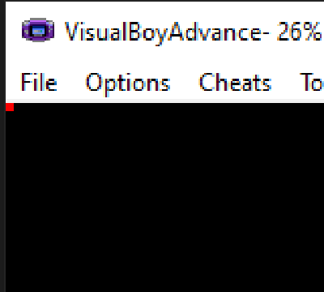

If you haven't already open up the Programmer's Notepad or whatever editor you're using and create a new empty project. This will usually be the first task in all of our projects, so that's why I've created a page that explains how to create an empty project and get it ready for our code. If you need help setting the project up, look at the sidebar on the right.
GBA Tutorials

In this tutorial we are going to start simple. I mean really simple. Take a look at the image on the right. See that little red pixel? That's what we're going to make, and I'll show you how to do it step-by-step. Creating something as simple as a single pixel can be more difficult than you might think.

Setup
Create program
The first thing we're going to do is create a file called main.cpp and stick the the following code into it. There's really only 4 lines of code to worry about, but it probably all looks like gibberish to you. Well, the first 2 lines should look like gibberish, but the last 2 lines should look familiar if you've programmed in C or C++ before.
The while(1); line just means to loop forever. You actually don't need it in this particular program for it to work. I always just include it by default since it's basically the game loop. When we start working on more complicated projects, then we'll put stuff in that loop, but for now it's empty.
The return 0 line is standard in C and C++. Notice that our main function has to return an integer when the program finishes. If some error occurred in the program and it has to terminate early then some integer will be returned that corresponds to some error code. If it makes it to this line here, then we can assume that everything ran fine and we can return 0, meaning that no errors have occurred.
Now for the first line, which I'll explain below.
main.cpp
main()
{
*(volatile unsigned short*)0x04000000 = 0x0403;
*(volatile unsigned short*)0x06000000 = 0x001F;
while(1);
return 0;
}
*(volatile unsigned short*)0x04000000 = 0x0403;
The first line is shown above for easy reference. This looks like a mess and you should never program this way unless you really like making life hard on yourself. In the future we'll make lines like this more readable, but I think it helps to see it in its more or less raw form. The GameBoy Advance has a bunch of registers that serve different purposes. Most of these registers are 16 bits wide and stored in an area of memory called the Input / Output Memory or IORAM which starts at memory address 0x0400:0000h.
Below is one such register called the display register. It's conveniently located in the first location in the IORAM, that is it has the same memory address of 0x0400:0000h. There are various settings in here that we can set. I'm not going to go over everything, just what we need to know for this project. So, there's really only 2 things we need to set: The mode we're using and which background to use.
You'll notice that I have 3 bits set.
*(volatile unsigned short*)0x06000000 = 0x001F;
The first line is shown above for easy reference. This looks like a mess and you should never program this way unless you really like making life hard on yourself. In the future we'll make lines like this more readable, but I think it helps to see it in its more or less raw form. The GameBoy Advance has a bunch of registers that serve different purposes. Most of these registers are 16 bits wide and stored in an area of memory called the Input / Output Memory or IORAM which starts at memory address 0x0400:0000h.
Below is one such register called the display register. It's conveniently located in the first location in the IORAM, that is it has the same memory address of 0x0400:0000h. There are various settings in here that we can set. I'm not going to go over everything, just what we need to know for this project. So, there's really only 2 things we need to set: The mode we're using and which background to use.
You'll notice that I have 3 bits set.
Conclusion
If you can successfully compile this simple project, then you should be good to go with the rest of the projects on this site.